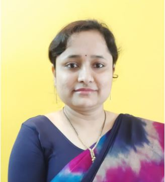

Qualification: B.Sc, M.Sc. & MPhil (Maths)
Founder of Poorwa Tutorials, dedicated to making mathematics education accessible and engaging for students.
We are a premier mathematics coaching institute dedicated to helping students excel from Class 9 to 12 and in competitive exams like JEE and Olympiads.
With experienced faculty, innovative teaching methods, and a student-centric approach, we make complex concepts simple and enjoyable.
Join us to experience a unique and effective way of mastering mathematics!
POORWA Tutorials and poorwatutorials.in as combined will help student, prepare for the CBSE examination through online videos & live classroom sessions that cover a wide range of problems based on the syllabus. Our tutorials & videos are designed to match the student's requirements and are well aligned with the school curriculum (CBSE). These will provide the students with tips and tricks to crack the exams and come out with flying colours. poorwatutorials.in is exciting and fun as you can simply log in touch the web or subscribe to our Youtube channel and find the best way to learn as well as crack tough exam questions.